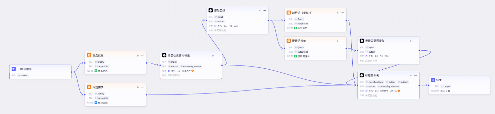

业务问题
设计师提供的通用标题不一定适配不同电商平台。人工逐条融合商品卖点、平台品类搜索词和小红书趋势词耗时，也容易遗漏平台规避词或保持表达口径一致。
02 / AI 电商内容自动化
将商品信息、唯品会后台数据、品类搜索词与小红书趋势串联起来，用 Workflow 批量生成适配不同平台的标题，并由人工完成最终更新。
设计师提供的通用标题不一定适配不同电商平台。人工逐条融合商品卖点、平台品类搜索词和小红书趋势词耗时，也容易遗漏平台规避词或保持表达口径一致。
以商品信息为输入，接入唯品会后台数据与趋势词，通过 Coze Workflow 调用大模型生成标题和文案；用 Prompt 约束卖点、穿搭细节、平台规避词和输出格式，并以测试样本检查效果。

项目与 IT 对接业务数据和接入方式，通过 OKR 会议同步进展。流程进入各部门日常使用后，支持批量生成可复制标题，平台链接仍由人工更新，避免把内容质量与发布动作混成一个自动化黑盒。
趋势词、商品卖点和平台规则共同影响标题质量。系统负责提高初稿产能和一致性，业务人员仍对规避词、品牌口径和最终发布内容负责。